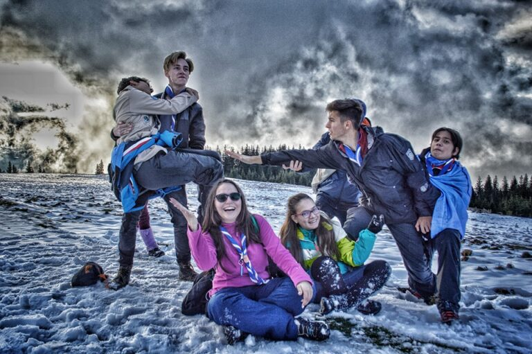

🚀 Hike • 2017
Operațiunea Requiem

Operațiunea Requiem s-a finalizat conform planului.
Divizia Aerospațială a CL Cabana Scout a raportat lansarea cu succes a două rachete tip R.E.B.U.T. (Rachetă Eliptico-Balistică Ultra Termică) de la Cosmodromul Moara Dracilor, în Munții Bucegi. Iată câteva impresii rămase în urma operațiunii de lansare a rachetelor :
Divizia Aerospațială a CL Cabana Scout a raportat lansarea cu succes a două rachete tip R.E.B.U.T. (Rachetă Eliptico-Balistică Ultra Termică) de la Cosmodromul Moara Dracilor, în Munții Bucegi. Iată câteva impresii rămase în urma operațiunii de lansare a rachetelor :
“Măăăăăăi! Hike-ul de toamna al exploratorilor cred că a fost cea mai faina experiență la munte de până acum. Am pornit deci, în dimineața zilei de 3 noiembrie, spre Gara de Nord cu ghiozdanul meu de 2 ori mai mare decât mine în spate și cu multe emoții pentru că urma să plec în primul meu hike
Pot sa spun ca am intrat în atmosferă încă din gară, pentru ca la fel cum pe munte te uiți după marcajele drumului, așa mă uitam și eu după cercetași cu eșarfe încercând sa găsesc “locul de întâlnire”. Cum am știut ca am dat peste cine trebuia? Am fost întâmpinată de “să-ți povestesc una din camp…”. După o scurtă (puțin mai lungă) așteptare, am urcat în tren și…cred că am ajuns în 5 minute….sau cel puțin asa mi s-a părut…la Brașov, apoi la Casa Florin. Drumul l-am văzut ca pe un “bonding time”, pentru că fiind aspirantă, nu îi cunoșteam foarte bine pe cercetași. Și cumva, pană la finalul hike-ului, am simțit că necunoscuții de dinainte au devenit ca o familie extinsă, plină de voie bună și glume pe măsură.
Încă din prima seară, după ce ne-am acomodat și am mâncat, ne-am strâns cu toții și am jucat jocuri propuse de liderul nostru, care s-au dovedit a fi foarte originale și energizante, specifice cercetașilor. După ce ne-am distrat însă, am avut cu toții parte de un moment spiritual, în care am abordat teme legate de spiritualitate, ne-am redescoperit pe noi și pe cei din jurul nostru, iar eu am învățat rugăciunea cercetașului. Am mers la culcare și în dimineața următoare ne-am trezit plini de energie și gata să luam muntele la pas.Așa am și făcut, prima data în mersul piticului, apoi în pași normali. Cel mai interesant, pe lângă Cascada Dracului care este spectaculoasă, mi s-a părut transformarea traseului de la șoseaua umedă, la drumul de pietre, la panta abruptă plină de frunze, la pajiștea verde și pană la a vedea numai zăpadă în jur, afundați chiar și pană la genunchi în ea. Urcarea a fost una dificilă, dar prietenii au făcut-o mai ușoară cu perlele și teoriile despre viață. Astfel am aflat ca zilele oamenilor scunzi sunt mai scurte decat zilele celor înalți, deoarece cei înalți văd orizontul mai larg; sau că dacă alunec, mereu vor fi Panait si Zaha gata să mă prindă. Nu numai perlele au fost amuzante, ci și căzăturile spectaculoase sau inexplicabile (aici amintim momentul în care 3 dintre noi am căzut în același timp din 3 cauze total diferite sau derapajele de la stână). Am avut un moment de impas, când am zis ca nu știu dacă mai pot să continui drumul însă, după cum ne-a zis și liderul mai apoi, corpul nostru poate duce mult mai multe decât credem, iar dacă nu ne depășim limitele impuse de minte nu avem cum să progresăm.
Poate că mersul pe întuneric în pădure sună înspăimântător, dar alături de cercetași și niște glucoză, totul capătă o armonie neașteptată. Pe drumul de întoarcere era întuneric, însă nu atât de întuneric încât să ne aprindem frontalele pentru că lumina lunii ne arăta exact cât aveam nevoie sa vedem… poteca și omul de lângă.
Când am intrat pe ușa cabanei, m-am gândit doar la ce bine o sa dorm. În schimb, ne-am strâns cu toții într-o cameră, am povestit momente amuzante iar și iar, ne-am jucat cărți și ne-am exersat mișcările de kung-fu.
Față de venire, drumul de întoarcere am vrut să fie lung, cât mai lung posibil. Așa că am cântat, am vorbit și am ascultat perle din campul de vară. Parcă aș fi fost și eu acolo.
Cine zice că nu-ți poți face prieteni în 3 zile? “ – Andreea (Alex), aspirant la exploratori.
*
“Primul meu hike? A fost una dintre cele mai frumoase experiențe din viața mea.
Am reușit să învăț multe lucruri, să mă cunosc mai bine atât pe plan spiritual, cât și pe cel fizic, dar cel mai important am reușit sa leg noi prietenii alături de niște oameni excepționali din toate punctele de vedere.Unul din cele mai memorabile momente a fost când am terminat misiunea și am pornit spre cabana. După un drum relativ lung și obositor, Panait și Dițu au început o bătaie cu zăpadă, apoi lor li s-au alăturat și Ovi cu Zaha. Momentul memorabil a fost când m-au introdus și pe mine în jocul lor. În acea clipă m-am simțit ca într-o familie mare și unită.Concluzia ? Primul meu hike a fost o experiență de viață din care am învățat multe lucruri noi despre viață și despre hike-uri și am creat amintiri alături de noi PRIETENI!” – Mihai, aspirant la exploratori.
*
“Hike-ul de toamnă 2k17 a fost o experiență prin care am retrăit prima mea ieșire. Chiar dacă am fost deja familiarizat cu ieșirile cercetăsesti, de fiecare dată când particip la una nouă îmi dau seama că muntele este locul în care mă simt cel mai liber și cel mai liniștit.
De fiecare dată când am mers prin natură am simțit că cineva mă veghează în mod constant prin întâmplări ce pot părea nesemnificative, cum ar fi un cățel ce stătea în fața noastră și ne arăta drumul, dar și zăpada ce se topise de pe o piatră numai în dreptul marcajului de traseu. De câte ori mă aventurez în hike-uri am în preajma mea o gașcă de oameni extraordinari cu care reușesc să fac din orice banalitate o amintire memorabilă ce merită povestită mai departe.Nopțile în care stăm cu toții la un loc și începem să povestim tot felul de întâmplări și trăiri îmi dau senzația că sunt la o reuniune de familie. Am reușit să legăm prietenii ce păreau a fi de o viață în doar 3 zile, ceea ce e greu de crezut pană nu simți pe pielea ta.În concluzie hike-ul de toamnă v2.0 a fost o oportunitate prin care am legat prietenii noi și mi-am dat seama că niciodată nu sunt singur pe lumea asta.” – Panait, eXplorator.